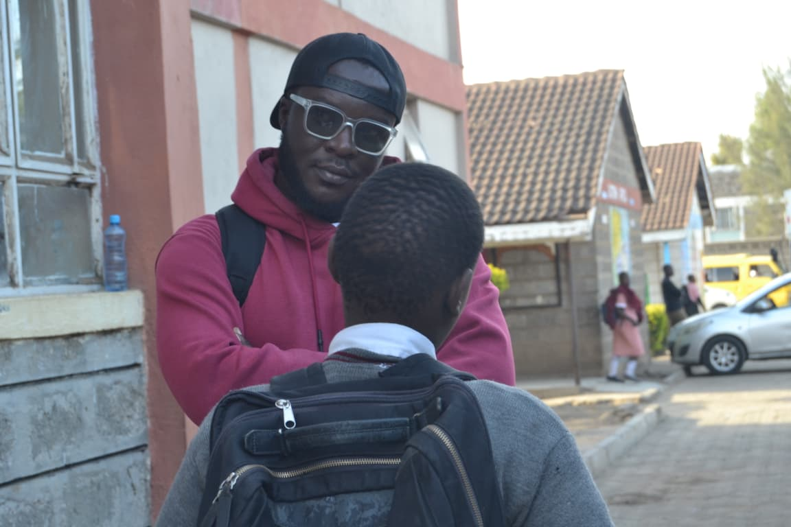
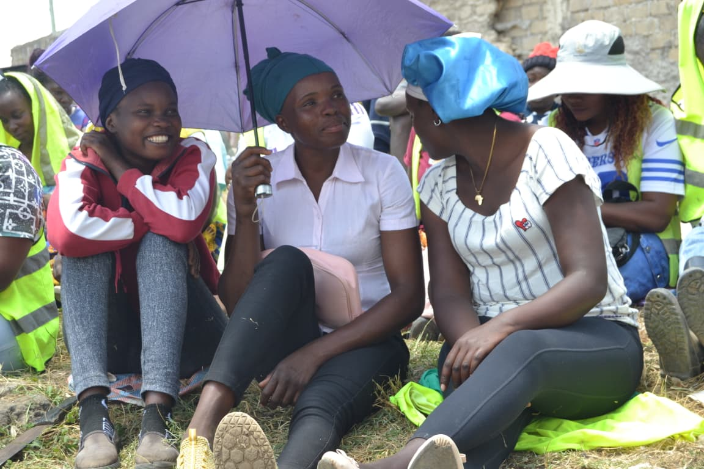
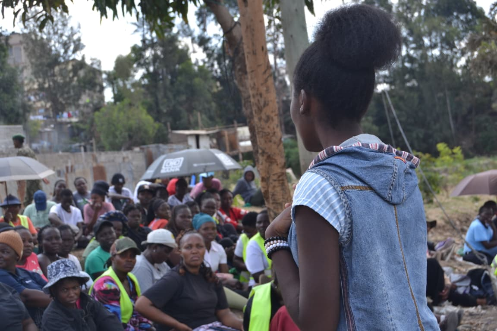
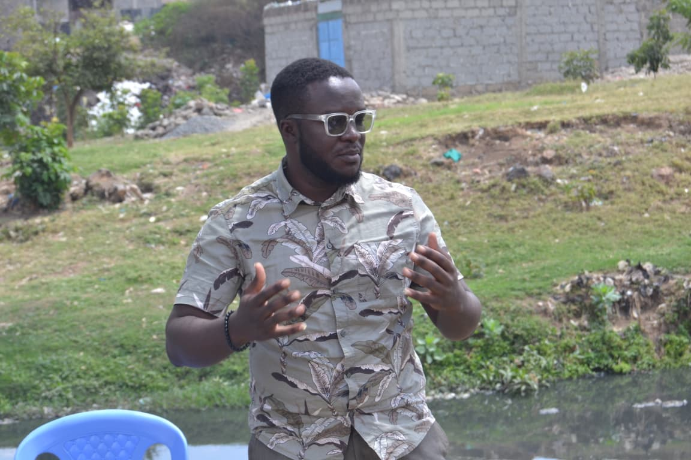
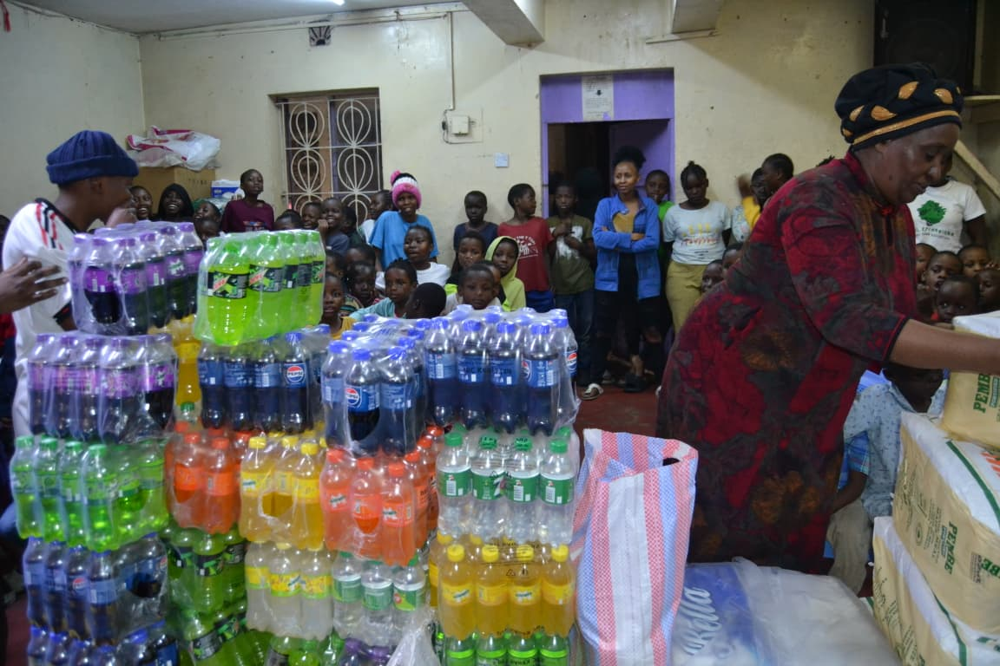
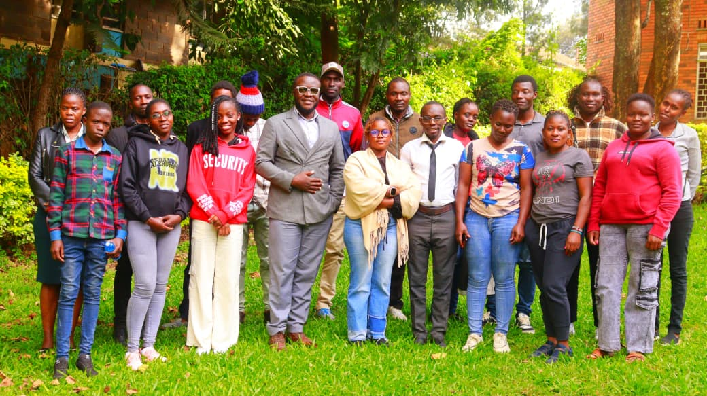

Our impact
Our impact
We publish only verified figures, stories and reports, with permission from the people involved.

Impact story
Sometimes, the deepest pain a child carries is not written on their face.
On this day, our Director, Hon. Francisco Miller, had an encounter with a young boy from one of the schools in Nairobi. What began as a simple conversation turned into a deeply moving moment that reminded us of the invisible struggles many children face in our schools and communities.
As they talked, the boy shared a story that touched the heart. Living with his grandmother, he spoke of one simple desire that many children may take for granted: he just wants to see his father.
A child's wish to see their parent may sound ordinary to some, but for this young boy, it carries a weight of longing, unanswered questions, and an emptiness that words can hardly explain.
As he narrated his story through tears, Hon. Miller listened. He was captivated not by the boy's circumstances, but by the child behind the pain—a young soul with dreams, potential, and a future worth fighting for.
In that moment, Hon. Miller saw more than a vulnerable child. He saw a young man who deserves guidance, encouragement, and an opportunity to grow into the great man he has the potential to become. He expressed his desire to mentor the boy and walk alongside him as he navigates life, offering him hope, direction, and the reassurance that his story does not have to end in pain.
Because sometimes, changing a child's life begins with something as simple as listening.
Across our schools, many children are carrying burdens far heavier than their little shoulders should have to bear. Family separation, absent parents, domestic conflict, neglect, poverty, loneliness, and dysfunctional family environments can deeply affect a child's emotional and psychological well-being.
Behind declining academic performance, sudden changes in behaviour, withdrawal from friends, anger, or unexplained sadness, there may be a child silently asking for help.
Mental health among children is a concern we can no longer afford to ignore. When emotional pain goes unnoticed or unsupported, some children may experience severe distress, hopelessness, and even suicidal thoughts.
We must not wait until a child breaks down before we pay attention. We must not dismiss their tears as childish behaviour or assume that providing food, clothing, and school fees is enough. Children also need emotional safety, affection, meaningful conversations, and adults who are willing to listen without judgment.
Every teacher, parent, guardian, community leader, and organisation has a role to play in creating an environment where children feel safe enough to speak about what hurts them.
To every parent who is absent, every guardian raising a child under difficult circumstances, and every adult responsible for a young life: please remember that your presence, words, and actions can shape a child's understanding of themselves and the world around them.
Children do not need perfect parents. They need responsible adults who make an effort to love them, protect them, guide them, and show up when it matters.
And to every child who feels forgotten, rejected, or alone: your circumstances do not define your worth. Your story matters. Your dreams matter. You deserve love, support, and a future filled with possibilities.
At Relationship Haven Organization, this encounter is a reminder that community work must go beyond programmes and public gatherings. We must create spaces where children can express themselves, access psychosocial support, receive mentorship, and find trusted adults who can help them navigate life's challenges.
Hon. Francisco Miller's willingness to mentor this young boy reflects a simple but powerful truth: we may not be able to change every difficult circumstance a child faces, but we can choose to become part of their support system.
Projects and activities
Upcoming and completed activities will be listed here with dates, locations, photographs and outcomes.




